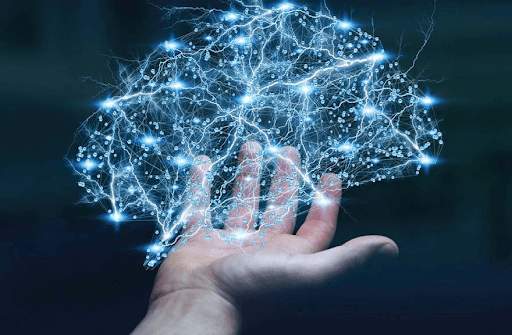
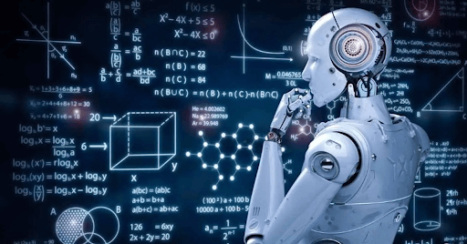
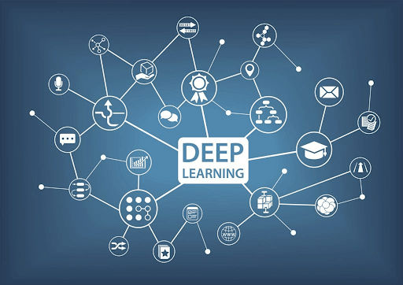
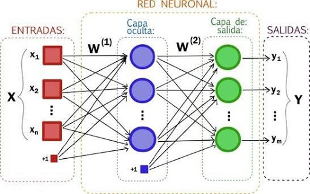
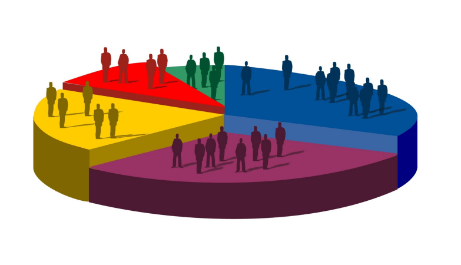
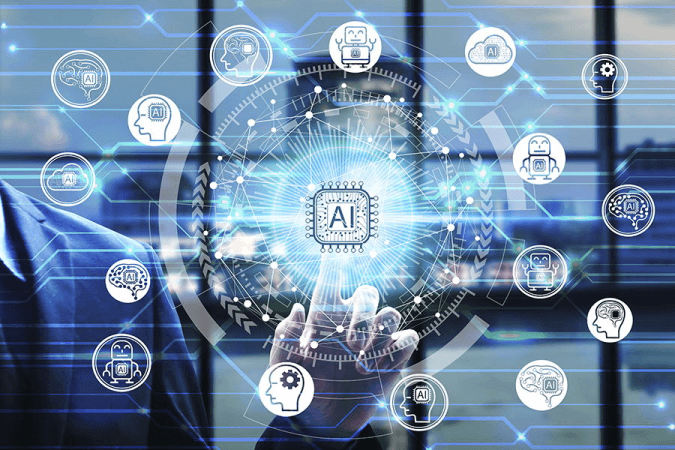
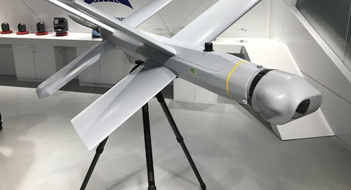

El término Inteligencia Artificial, hace referencia a toda aquella máquina o software que se percibe como ente inteligente.
Son todas aquellas que tengan la capacidad de interpretar datos y utilizarlos con un fin en concreto.
No tienen conciencia propia per sé; están programadas para seguir instrucciones específicas, que pueden o no tener límites de alcance, pero que siempre estarán vulnerabilizadas a cualquier intervención humana.
Éstas se hacen ver al demostrar ser inteligentes; aunque lo que hacen en realidad, es imitar funciones cognitivas, percibidas como inteligentes como: razonar, aprender y llegar a una resolución ante determinados problemas.
La inteligencia artificial ha sido usada en un amplio número de campos como la robótica, la comprensión y traducción de lenguajes, aprendizaje de palabras, etc. Los principales campos y más destacados donde podemos encontrar una notoria evolución de la inteligencia artificial son:
La Inteligencia Artificial es hoy la rama primordial y la base del desarrollo y el avance, tanto informático, como telecomunicacional y científico.
Es fundamental, hoy en día, para mejorar la calidad y los tiempos de producción de las empresas; la automatización de ciertas tareas hace que se inviertan menos cantidades en realizar tareas sencillas.
La Inteligencia Artificial no está destruyendo las industrias, los mercados y los puestos de trabajo, como se suele oír; los está cambiando.
El Machine Learning es la rama de la inteligencia artificial en la que "las máquinas" son capaces de aprender por sí mismas, mediante una serie de algoritmos y "experiencias propias.".
El Machine Learning hace posible que una máquina o trozo de software evalúe datos, y que a través de ellos se tomen decisiones.
Es capaz de aprender de sus propias experiencias. Logra obtener feedback inmediato de cada una de sus acciones y elecciones, definiendo el nivel de asertividad que se obtuvo. Aprende también mediante "castigos y premiaciones".
La finalidad principal de éste, es la predicciónes de alto valor que se pueden obtener de ella, y cómo éstas pueden ser utilizadas para que, por sí mismo tomé decisiones mucho más asertivas y precizas.
Las decisiones que toma están programadas mediante algoritmos, lógica, probabilidad y estadística, y reglas de asociación establecidas.
Más allá de todo esto, el Machine Learning no puede reemplazar lo que percibimos como conciencia o intuición humana, dependerá siempre de un sistema establecido de reglas de representación de datos.
Las aplicaciones de ésta rama se ve plasmada, por ejemplo en:
HISTORIA: El desarrollo de la tecnología comenzó de forma intensiva entre los años 70 y 80. Gracias al desarrollo y la investigación se pasó de utilizar terminales que ocupaban toda una habitación a modelos muy asequibles y pequeños.
Hubo avances en materia de hardware y también de software que llevaron consigo la popularidad de las aplicaciones informáticas. Así, las personas comenzaron a apoyarse en estas máquinas para realizar cálculos rápidos y automáticos, haciendo sus tareas rutinarias muy sencillas.
El deep learning supone la base tecnológica de diferentes funcionalidades de muchos de los productos de Google, así como de otras importantes empresas tecnológicas.
Para saber bien en qué consiste el aprendizaje profundo, decidí investigar y entre tantas cosas encontré una entrevista que se le hizo a dos expertos del tema: Augusto Vega y José Dorronsoro.
Vega, nació en Argentina, es investigador permanente de los laboratorios IBM T. J. Watson de Nueva York y experto en arquitecturas de sistemas para aplicaciones de Aprendizaje Profundo e Inteligencia Artificial.
Y Dorronsoro es catedrático de Ciencias de la Computación e Inteligencia Artificial de la Escuela Politécnica Superior de la Universidad Autónoma de Madrid.
¿Qué significa en términos simples aprendizaje profundo?
Augusto Vega: El aprendizaje profundo es un campo perteneciente a la inteligencia artificial cuyo objetivo es el estudio y construcción de sistemas de cómputo capaces de "aprender" a partir de la experiencia, inspirándose ligeramente en algunos principios del funcionamiento del cerebro animal.
En general, estos sistemas deben ser entrenados a partir de ejemplos conocidos, de manera similar en la que se le enseña a un niño pequeño a reconocer objetos o sonidos a su alrededor (se señala un árbol y se le dice "eso es un árbol"; o se escucha el ruido de un tren y se le dice "eso es un tren").
A este tipo de aprendizaje automático se le llama "profundo" porque presenta una estructura jerárquica que extrae diferentes niveles de detalle de los datos en cuestión.
¿Qué es una "red neuronal" en inteligencia artificial y en qué medida se comporta como las neuronas del cerebro humano?
Augusto Vega: ``Una red neuronal artificial es un modelo computacional ligeramente inspirado en el funcionamiento de las neuronas del cerebro biológico (por ejemplo, el cerebro humano)".
La jerarquía de una red neuronal artificial está formada por capas (o niveles) de neuronas, siendo las primeras capas responsables del reconocimiento de los detalles más específicos, mientras que las últimas capas detectan y reconocen patrones más abstractos y generan el resultado final. Cuando la red neuronal artificial está formada por múltiples capas, se la denomina red neuronal profunda, otro término posible con el que suele referirse al aprendizaje profundo.
José Dorronsoro: Las neuronas de las redes neuronales artificiales son eso, artificiales, y su relación con las neuronas del cerebro o con su funcionamiento neurofisiológico tiene más de analogía metafórica que de un funcionamiento realmente similar.
Es más fácil comprender que una máquina siga instrucciones del tipo, "si pasa esto, haz esto otro", pero es muy difícil entender que una máquina aprenda sola. ¿Podría darnos algún ejemplo?
Augusto Vega: En el contexto de la inteligencia artificial, decir que una máquina "aprende sola" se refiere simplemente al uso de técnicas (por ejemplo, el aprendizaje profundo) que le permiten al sistema generalizar su funcionamiento a casos no vistos previamente, y de manera automática, sin necesidad de reglas predefinidas.
Antes de poder ser utilizado, un sistema de aprendizaje profundo debe ser "entrenado" a partir de una gran cantidad de ejemplos conocidos (en principio, cuantos más ejemplos, mejor será el funcionamiento). Entonces, se le "enseñan" imágenes de diferentes automóviles (distintos modelos, colores, tamaños, etc.) indicando que todos ellos son vehículos.
Con estos ejemplos, el sistema de aprendizaje profundo ajusta sus parámetros internos de manera tal que, si se le presenta una nueva imagen de un automóvil diferente, el sistema también sea capaz de reconocerlo como tal.
José Dorronsoro: En última instancia el aprendizaje neuronal es algo muy poco misterioso: durante el aprendizaje se mide de manera constante la diferencia entre la respuesta deseada y la proporcionada por la red y ésta ajusta las conexiones entre las muchísimas unidades de sus muchas capas de manera que esa diferencia sea cada vez menor. Esto es esencialmente el "aprendizaje automático" de la red, que se detiene cuando la diferencia entre respuesta y objetivo es suficientemente pequeña.
¿Podría darnos ejemplos de usos comunes de aprendizaje profundo que ya afectan nuestras vidas?
José Dorronsoro: Los reconocedores de palabras de nuestros teléfonos móviles, los sistemas de identificación de personas en imágenes, los sistemas de traducción automática y gran parte del proceso que tiene lugar en los coches autónomos se basan en gran medida en redes profundas.
Augusto Vega: El aprendizaje profundo está presente de manera muy amplia (y en algunos casos, inimaginable) en nuestro día a día. Los predictores de palabras en los teléfonos móviles, los asistentes virtuales como Apple Siri, la traducción de texto entre diferentes idiomas, y el reconocimiento automático de objetos y personas en fotografías en redes sociales son algunos ejemplos conocidos.
Las redes neuronales tienen una composición similar a la del cerebro humano, ya que funciona a través de nodos que son como neuronas artificiales que en realidad son códigos matemáticos los cuales se conectan para cumplir ciertas funciones o bien aprendiendo y generando nuevas funciones por ella misma.
Las redes neuronales se utilizan para resolver variedad de problemas que con los códigos de programación convencionales es más complicado solucionarlos como por ejemplo el reconocimiento de voz y la visión por computadora, estos algoritmos se caracterizan por su capacidad de aprendizaje y mismamente es usa en plataforma de youtube, Instagram, Facebook, etc. Ya que aprenden de lo que ves y lo que te gusta y por ende te recomiendan más sobre eso.
Los campos de aplicación son por ejemplo:
La base central de este tipo de inteligencias son los datos. Sí,la inteligencia artificial se nutre de datos y los emplea para elaborar algoritmos y para componer la 'Lógica' de las máquinas. En conclusión, utiliza datos para obtener información del entorno e interactuar con él en consecuencia.
Mejora en la toma de decisiones: Disponer de un gran volumen de datos estructurados que se puedan analizar ayuda a las organizaciones a poder tomar una decisión.
Feedback a tiempo real: La tecnología Big Data permite no solo almacenar y procesar datos. También puede recibir datos a tiempo real y contar con la información necesaria rápidamente.El Big Data es una tecnología ágil y veloz que permite, por ejemplo, obtener información a tiempo real del estreno de un producto o el resultado de una estrategia.
Conocimiento del mercado: La adquisición y análisis de datos del Big Data permite conocer a los clientes y adelantarse a sus necesidades, así como detectar inclinación en consumo o problemas de atención al cliente.
Tecnología del presente y del futuro: La ciencia de datos comienza a ser un elementos diferenciador y de éxito entre las compañías. La tecnología del Big Data está en constante evolución y todo apunta a que jugará un papel fundamental en la toma de decisiones de un futuro cercano.
Exceso de datos: La funcionalidad del Big Data surge de su capacidad para extraer información de los datos. Si estos datos se almacenan y analizan de manera exageradamente acumulativa, solo se convierten en ruido que ralentizará y obstaculiza las tareas.

Ciberseguridad: La seguridad es el mayor reto para la tecnología Big Data. La fragilidad de esta enorme cantidad de datos almacenados es el objetivo de los nuevos ciberataques.
Los principales campos de aplicación del Big Data son:
Cambridge Analytica: Es una empresa británica creada en 2013 dedicada al análisis y minería de datos.
Este mismo estuvo en un gran problema relacionado con Facebook.
Cambridge Analytica utilizó datos para sus actividades comerciales que proceden de Facebook y han sido obtenidos de una forma que vulnera los términos de uso.
¿Qué se busca solucionar con ella?
Muchas veces escuchamos que la IA es algo a lo que le tenemos que temer,muchos puestos de trabajos van a ser reemplazados por las máquinas,o que la humanidad va a ser conquistada por los robots y la Inteligencia Artificial. Pero la situación se aleja mucho de ser dramática ya que aunque se destruirán trabajos se crearán muchos nuevos empleos, eso sí, más complejos.
La IA buscar ayudar y volver más eficientes muchas cosas,a continuación voy a dar algunos ejemplos de cómo la IA puede ayudar a ser el planeta algo mejor.X
Fallos de programación o bugs: es bien sabido que las máquinas y softwares no son perfectas, por más que estén programados de pie a cabeza de la mejor manera y por el ingeniero más capacitados, pueden llegar a generar problemas, hoy en día los riesgos que suponen en este aspecto son limitados, ya que no existe muchas tecnología o al menos no está tan acentuada todavía, pero por ejemplo: ha habido accidentes fatales con autos autónomos y ahora imaginemos en un futuro otras máquinas y tecnologías y que se nos presente este problema.
Carrera armamentística: Hoy en día existen muchas armas como los drones o misiles que causan la muerte de miles de civiles y además las grandes potencias están haciendo énfasis en invertir en armas robots lo que podría aumentar el potencial de estas armas y generar mucho más daño.
Que cobren conciencia propia: Lo hemos visto en un sinfín de películas como : Matrix, Ghost in the Shell, yo, robot, Terminator, etc en las que las inteligencias artificiales han tomado conciencia propia y se han armado en contra de la humanidad y llegado a crear sus propias ideologías y ser líderes de otras máquinas a las cuales convencer, y esto generaría el fin del mundo, quizá la extinción de la raza humana ya que el material del cual puedan llegar a estar hechos estas máquina, es más resistente y carecerán de dolor, por lo que no tendríamos oportunidad contra ellos en masa.
Muchas veces escuchamos que la IA es algo a lo que le tenemos que temer,muchos puestos de trabajos van a ser reemplazados por las máquinas,o que la humanidad va a ser conquistada por los robots y la Inteligencia Artificial. Pero la situación se aleja mucho de ser dramática ya que aunque se destruirán trabajos se crearán muchos nuevos empleos, eso sí, más complejos.
La IA buscar ayudar y volver más eficientes muchas cosas,a continuación voy a dar algunos ejemplos de cómo la IA puede ayudar a ser el planeta algo mejor.